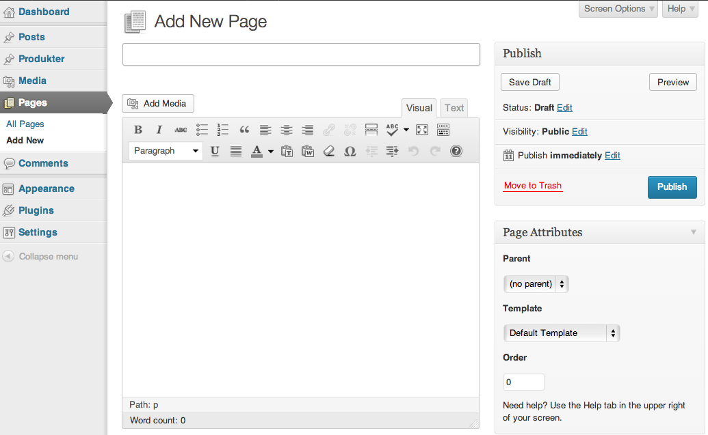

Web Management, 1IK424
Linnéuniversitetet, VT2013
Wordpress part III
Agenda
- Page, Page template
- Att välja tema
- Child Themes
- Custom Post Type
- SEO - Att tänka på vid sökmotoroptimering
Pages
- Är ämnade för "statiskt" innehåll
- Skapas via admingränssnittet
- En sida tilldelas en "Page template" - "Default template" = page.php
- Du kan skapa en uppsättning av "Page Templates" att välja på

Att skapa statiska sidor
Skapa en statisk sida och placera i en dynamisk meny
Använd "default template".
Gör denna sida till startsida och placera bloggflödet i en annan sida.

Skapa En startsida och en nyhetssida, lägg i menyn
Visa hur man ändrar till en annan startsida
Pages templates
Visa sidor har två kolumner, andra tre o.s.v.
Genom att skapa egna Page Templates kan du tilldela olika sidor olika utseenden.
En page templete skapas i en egen fil
De bör ha liknande namn ex. template-two-cols.php, template-four-cols.php o.s.v.

Skapa två template som visar olika kategorier på olika sätt
Att använda andras teman
- Man lär sig genom att studera andras teman
- Får design, struktur och massor av funktionallitet
- Kunna manipulera de delar man vill
- Det svåra är att hitta rätt tema just för dig

När du väljer ett tema
- Vad tycker andra?
- Licens - Vad krävs för att få använda det?
- Utseende, layout
- Enkelhet att modifiera? Custum headers, custom background
- Kunna manipulera de delar man vill
- Språkstöd?
- Hur välstrukturerat ser det ut, filmässigt och kodmässigt
- Prestanda, hur snabbt laddar det?
- Valideras det? http.validator.w3.org
- Testa i olika webbläsare!
- Hur är stödet för mobila webbläsare?
- Vinner man något på att utgå från en annans tema
- SEO - Hur väl anpassat för sökmotorerna?
Taktik vid befintliga teman
Ändra i det befintliga temats filer.
Vad händer om temat uppdateras med ny funktionalitet?
Child Theme

Genom att skapa ett eget "child theme" ärver man ner egenskaper från ett befintligt "parent theme"
Du byter ut de delar du vill förändra, egna sidor, egen css ect.
Detta gäller inte functions.php, Bara förändringar
Ett child theme skapas i en egen mapp, med egna filer
Hur!?
- Skapa en ny mapp i wp-content/themes
- Skapa filen style.css som vanligt och lägg till raden "Template"
BILD
- Importera
Vad kan gå fel?
Använd get_stylesheet_directory_uri()
istället för get_template_directory_uri()
<img src="<php echo get_template_directory
Custom post types
Du kan skapa egna "posttyper"
BILD PÅ PRODUKTER i ADMIN
Du kan skapa egna kategorier till din posttyp
Userfriendly
Ta steget från blogg till CMS
Custom post types - DEMO
Att skapa en egen custom post type
och visa en sida med dessa
Språkstöd
Överkurs
Dölja saker i admingränssnittet
http://sethstevenson.net/customize-the-wordpress-admin-menu-based-on-user-roles/
SEO
Search Engine Optimization
SEO Wordpress
- Validerad kod
- Bra permalänkar, "page-slug"
- Tags, keywords
- Generate a sitemap
- Dynamisk <title>
- Använd rubriknivåer, h1, h2 o.s.v.
- Breadcrums
- Laddningstid
 Detta verk är licensierat under en
Creative Commons Erkännande-IckeKommersiell-DelaLika 3.0 Unported Licens.
Detta verk är licensierat under en
Creative Commons Erkännande-IckeKommersiell-DelaLika 3.0 Unported Licens.